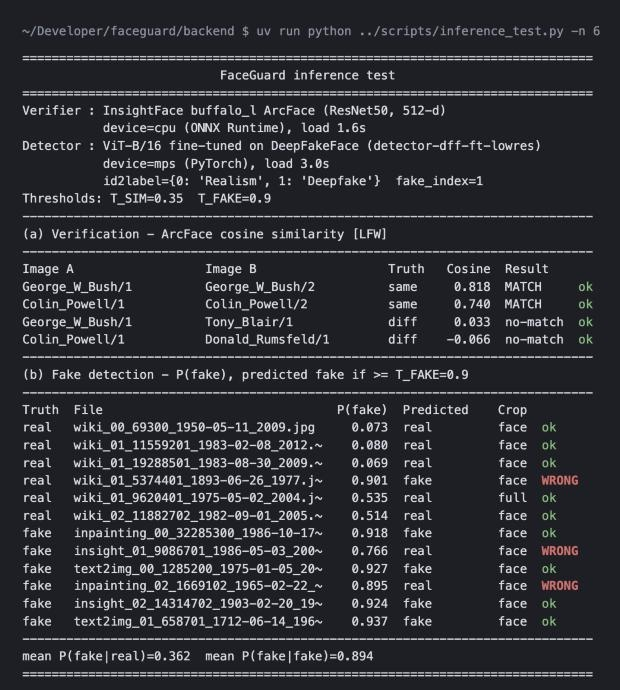
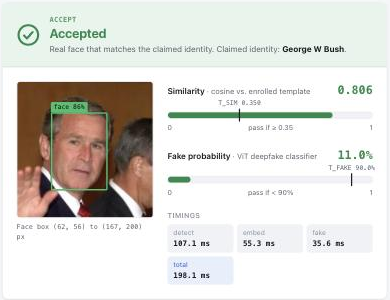
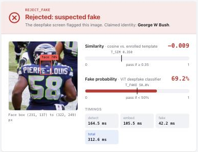

inference_test.py with the downloaded detector: both models load (ArcFace on CPU via ONNX Runtime, ViT on Apple MPS). Verification is 4/4 correct; detection is 6/12 correct at TFAKE = 0.5.Cody Kandarian and Raleigh · Due November 22, 2026 · Repository: github.com/codyk2/faceguard
FaceGuard is a face verification system with deepfake screening. A user claims an enrolled identity and submits a face photo. The system accepts only if the photo is judged real by a deepfake detector and its face embedding matches the enrolled template. Otherwise it returns REJECT_FAKE, REJECT_MISMATCH or NO_FACE.
Face. Enrollment and probe data are public celebrity photos from Labeled Faces in the Wild (LFW); fake samples come from the public DeepFakeFace benchmark. No photos of people outside these public datasets are collected, so no consent forms are required.
| Role | Model | Details |
|---|---|---|
| Face detection + alignment | SCRFD-10GF (InsightFace buffalo_l) [2] | Returns face boxes and 5 landmarks; landmarks drive a similarity transform to a 112×112 aligned crop. |
| Verification | ArcFace, ResNet-50 backbone (InsightFace buffalo_l) [1] | 512-d L2-normalised embedding; cosine similarity against the mean of 3–5 enrolled embeddings. Runs on ONNX Runtime (CPU). |
| Deepfake detection | ViT-B/16 deepfake classifier prithivMLmods/Deep-Fake-Detector-v2-Model [3, 4], further fine-tuned by us on DeepFakeFace [7] (Section 3.4) | Pretrained model is itself fine-tuned from google/vit-base-patch16-224-in21k; labels {0: Realism, 1: Deepfake}. Runs on PyTorch (Apple MPS). Also evaluated: dima806/deepfake_vs_real_image_detection [5]. |
The detector is a Vision Transformer (ViT-Base/16) pretrained on ImageNet-21k and fine-tuned as a binary real-versus-fake face classifier. FaceGuard crops the detected face with a 30% margin (so the blending boundary between face and background stays in view) and resizes it to 224×224. The ViT cuts this crop into 196 non-overlapping 16×16 patches, linearly projects each patch to a 768-dimensional token, adds a learned position embedding, and prepends a learned classification token. Twelve transformer encoder layers then apply multi-head self-attention, so every patch can attend to every other patch in the face.
That global attention suits the task. Face swaps and generated faces tend to carry inconsistencies that span regions, such as blending seams at the face boundary, texture or lighting that differs between the face and its surroundings, and unnatural high-frequency detail. A CNN sees these only through gradually growing receptive fields. The final state of the classification token goes through a linear head and softmax, giving P(fake). FaceGuard reads which output index means “fake” from the model's id2label configuration rather than hard-coding it, and rejects the probe when P(fake) ≥ TFAKE (0.5 by default). A known limitation of such classifiers is weak generalisation to generation methods absent from their fine-tuning data, so we measure the detector on our own benchmark rather than relying on its model card. The downloaded model scored near chance there, so we fine-tuned all of its weights on a separate DeepFakeFace training split (Section 3.4). The architecture and inference path are unchanged; only the weights and the decision threshold differ.
Both models were run on real data with scripts/inference_test.py. Verification uses LFW image pairs; detection uses real and fake images from DeepFakeFace [7], with the fakes spread across its three generation methods (Stable Diffusion inpainting, InsightFace face swap, Stable Diffusion text-to-image). Figure 1 shows the downloaded detector; Figure 2 shows the same test after fine-tuning.
inference_test.py with the downloaded detector: both models load (ArcFace on CPU via ONNX Runtime, ViT on Apple MPS). Verification is 4/4 correct; detection is 6/12 correct at TFAKE = 0.5.Verification works as expected: same-person pairs score 0.74–0.82 and different-person pairs score about 0, far apart on either side of TSIM = 0.35. Detection was the weak link: the downloaded ViT catches the face swaps (P(fake) 0.69 and 0.76) but scores the diffusion inpainting and text-to-image fakes as real, and flags two of six real photos as fake.

The same models serve the FastAPI backend behind the React interface. Ten LFW celebrities were enrolled with four photos each; Figure 3 shows a held-out photo of an enrolled identity, an impostor, and a face-swap fake, each verified against the claimed identity “George W Bush” using the fine-tuned detector.



scripts/evaluate.py)Beyond the spot checks, both models were evaluated on full benchmarks: verification on the 6,000 standard LFW pairs.txt pairs (3,000 genuine, 3,000 impostor), and detection on all 600 DeepFakeFace evaluation images, comparing both downloaded detectors.
| Verification (ArcFace, LFW 6,000 pairs) | |
|---|---|
| ROC AUC | 0.9956 |
| Equal error rate | 0.63% (at cosine 0.151) |
| FAR / FRR at TSIM = 0.35 | 0.00% / 1.07% |
| Accuracy at TSIM | 99.47% |
| Mean cosine, genuine / impostor | 0.666 / 0.002 |
| Detection at TFAKE = 0.5 | prithivMLmods | dima806 |
|---|---|---|
| Accuracy | 0.512 | 0.535 |
| Precision / recall | 0.55 / 0.41 | 0.54 / 0.84 |
| ROC AUC | 0.543 | 0.502 |
| Real photos flagged fake | 37% | 80% |
| Fakes caught: inpaint / swap / text2img | 46 / 41 / 35% | 82 / 78 / 92% |
Detection was scored on the 469 of 600 images with a usable face (131 group or small-face photos have faces under 60 px and are rejected as low quality). The face-selection fix in Section 4 cut verification FRR from 6.17% to 1.07% and EER from 5.07% to 0.63%.

Takeaway. Verification is strong: at the default threshold it accepted no impostor pairs and rejected about 1 in 100 genuine pairs.
Off-the-shelf deepfake detection does not transfer to this benchmark. The primary model's AUC of 0.54 is near chance; the alternative flags 80% of everything as fake, real photos included. This confirms the generalisation risk from Section 2 and motivated fine-tuning (Section 3.4).
scripts/train_detector.py)Data and splits. We downloaded a separate training set of 1,500 DeepFakeFace source photos, each contributing its real image and one fake made from it, rotating across the three generators. Pairing the real and fake versions of the same picture pushes the model toward generation artifacts rather than identity or scene content. No source photo of the 600-image evaluation set appears in training; the download script asserts this. Training images were split 90/10 into train and validation by source photo. All inputs are face crops produced by the app's own preprocessing, so the model trains on exactly what it sees at inference.
A shortcut we found and removed. DeepFakeFace's inpainting and face-swap fakes were resized to 512×512 from non-square photos, so their faces are 12–30% wider than in the source. On the evaluation set, crop shape alone separates real from fake with AUC 0.68. During training every crop, real or fake, is randomly stretched or squeezed (0.75–1.35×), downscaled and JPEG re-compressed, so shape, resolution and compression carry no class signal.
Training. All weights of the downloaded ViT were fine-tuned for 4 epochs (AdamW, learning rate 2×10−5, batch 32, cosine schedule, label smoothing 0.05), about 7 minutes on an Apple-silicon GPU. The epoch with the best validation AUC was kept (0.957; the downloaded model scored 0.544).
Threshold calibration. Even after fine-tuning, the model gives LFW's older, low-resolution news photos higher P(fake) than DeepFakeFace's real photos, so a 0.5 threshold would flag about 40% of genuine LFW users. We set TFAKE using real photos only: a 1,000-image LFW sample was split by person into a calibration half and a check half, and TFAKE = 0.90 gives 5% false positives on the calibration half and 4.8% on the check half.
| DeepFakeFace test (469 crops) | Downloaded | Fine-tuned |
|---|---|---|
| ROC AUC | 0.548 | 0.950 |
| Fakes caught at ~5% real FP | 8% | 52% |
| …inpaint / swap / text2img | 10 / 10 / 3% | 46 / 49 / 62% |
| Fakes caught at ~10% LFW FP (T 0.87) | — | 63% |
| Crop-shape-only baseline AUC | 0.684 | |
| Live system, fine-tuned (TSIM 0.35, TFAKE 0.90) | |
|---|---|
| Genuine users (150 held-out photos) | 95% ACCEPT, 5% flagged fake |
| Impostors (150) | 100% rejected |
| DeepFakeFace fakes (300) | 47% REJECT_FAKE, 35% REJECT_MISMATCH, 18% NO_FACE |
| Enrollment photos accepted | 40 / 40 (was 22 / 40) |
Result. Fine-tuning lifts detection AUC from chance (0.55) to 0.95, well above the 0.68 that the stretch shortcut alone could explain. At the false-alarm rate a real deployment can tolerate (about 1 in 20 genuine photos), it catches about half of the fakes, up from 8%.
Limits. The test fakes come from the same three generators as the training fakes, so this is in-distribution accuracy; generalisation to new generators is untested. Every test fake shows a different person from the claimed identity, so deepfakes of an enrolled person, the harder attack, are not yet evaluated. Narrowing the LFW-versus-DeepFakeFace gap, so a lower threshold can be used, is the main open problem.
Repository: https://github.com/codyk2/faceguard (private; access by collaborator invite). One command sets up each half: make setup runs uv sync (Python 3.11) and npm install; make data, make inference-test, make dev and make test cover the rest.
| Path | Contents |
|---|---|
backend/app/ml/ | Preprocessing (decode, SCRFD detect, main-face selection, alignment, margin crop), ArcFace verifier, ViT detector, decision pipeline |
backend/app/ | FastAPI app: /enroll, /verify, /detect, /identities, /health; SQLite store of per-image embeddings |
frontend/ | React + TypeScript (Vite): Enroll, Verify and Identities pages; webcam capture or upload |
scripts/ | Dataset download, inference test, seed enrollment, evaluation, detector fine-tuning (make train-detector) |
backend/tests/ | 39 tests (decision logic, API flows, real-model smoke tests); all passing |
| Problem | Fix |
|---|---|
| Project on an iCloud-synced Desktop corrupts virtualenvs | Moved the project to ~/Developer |
insightface 0.7.3 ships only as source and compiles a Cython extension | Xcode Command Line Tools; Python 3.11 for arm64 wheel coverage of onnxruntime and torch |
| InsightFace incompatible with NumPy 2 | Pinned numpy<2.0 |
| SSL certificate errors (uv's standalone Python has no system CA store) in albumentations' update check and dataset downloads | NO_ALBUMENTATIONS_UPDATE=1; certifi SSL context for downloads |
| The two detector models use different label names and orders | P(fake) index resolved from model.config.id2label |
| Largest-box face selection picked half-visible neighbours on LFW crops (boxes extend past the image edge) | Rank faces by image-clipped area weighted toward the centre |
| Training-set download stalled when Hugging Face dropped parallel range requests | Save each pair as it arrives; 4 connections; watchdog restarts and resumes from disk |
| Fine-tuned weights (~340 MB) too large for git | Rebuilt reproducibly with make train-detector; the app falls back to the downloaded model if absent |
Work is split evenly (50/50) between the two group members, each owning one half of the pipeline end to end. The modality and model choices, and end-to-end testing, were done together.
| Member | Responsibilities | Share |
|---|---|---|
| Cody Kandarian | Verification model (InsightFace ArcFace) selection and integration; face detection, alignment and main-face selection; FastAPI backend and SQLite storage; environment setup and dependency fixes; LFW data, seed enrollment and verification evaluation (FAR/FRR, ROC); GitHub repository | 50% |
| Raleigh | Deepfake detection model selection and integration; DeepFakeFace data, detector fine-tuning and threshold calibration; detection evaluation; React web interface (enroll, verify, identities); inference-test screenshots and this report | 50% |